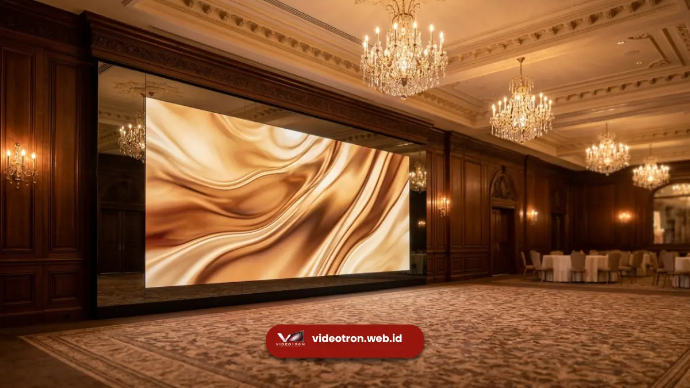

Perbedaan utama videotron indoor dan outdoor terletak pada IP rating, tingkat brightness, jarak pandang optimal, ketahanan terhadap cuaca, dan metode perawatannya, sehingga keduanya tidak bisa saling menggantikan begitu saja.
Poin Penting Perbedaan Indoor vs Outdoor:
- Videotron outdoor memiliki IP rating lebih tinggi (misalnya IP65) dibanding indoor (misalnya IP30)
- Brightness videotron outdoor jauh lebih tinggi agar tetap terlihat di bawah sinar matahari
- Jarak pandang videotron outdoor umumnya lebih jauh dibanding indoor
- Videotron outdoor dirancang tahan hujan, panas, dan kelembapan tinggi
- Maintenance videotron outdoor lebih intensif karena terpapar cuaca secara langsung
Perbedaan IP Rating antara Videotron Indoor dan Outdoor
IP rating (Ingress Protection) menunjukkan seberapa tahan sebuah perangkat terhadap debu dan air.
Videotron outdoor umumnya memiliki IP rating tinggi seperti IP65, yang berarti mampu menahan debu sepenuhnya serta tahan terhadap semburan air dari segala arah, sehingga aman dipasang di area terbuka yang terpapar hujan dan debu jalanan.
Sebaliknya, videotron indoor biasanya memiliki IP rating yang lebih rendah, seperti IP30 atau IP20, karena dirancang untuk digunakan di ruangan tertutup yang bebas dari paparan air dan debu berlebih.
Memasang videotron indoor di area outdoor tanpa pelindung tambahan berisiko menyebabkan kerusakan pada modul akibat kelembapan atau air hujan.
Perbedaan Tingkat Brightness (Kecerahan Layar)
Brightness diukur dalam satuan nits, yaitu ukuran kecerahan cahaya yang dipancarkan layar. Videotron outdoor umumnya membutuhkan brightness yang jauh lebih tinggi dibanding indoor agar tetap terlihat jelas meski bersaing dengan cahaya matahari langsung pada siang hari.
Videotron indoor, karena digunakan di ruangan dengan pencahayaan yang lebih terkontrol dan minim sinar matahari langsung, umumnya menggunakan brightness yang jauh lebih rendah.
Brightness yang terlalu tinggi pada videotron indoor justru dapat membuat mata penonton silau dan tidak nyaman, terutama di ruangan gelap seperti bioskop mini atau studio.
 Videotron outdoor dirancang dengan proteksi fisik tinggi dan kecerahan optimal untuk area luar ruangan.
Videotron outdoor dirancang dengan proteksi fisik tinggi dan kecerahan optimal untuk area luar ruangan.
Perbedaan Jarak Pandang Optimal
Videotron outdoor umumnya dipasang dengan pixel pitch yang lebih besar karena jarak pandang penonton yang jauh lebih jauh, seperti pada billboard di pinggir jalan raya atau panggung konser besar.
Sebaliknya, videotron indoor dipasang dengan pixel pitch yang lebih kecil karena jarak pandang penonton cenderung lebih dekat, seperti di dalam ballroom atau ruang pameran.
Perbedaan jarak pandang ini secara langsung memengaruhi pemilihan resolusi dan tipe modul yang digunakan, sehingga videotron outdoor dan indoor umumnya tidak menggunakan spesifikasi pixel pitch yang sama.

Videotron indoor di area ballroom mengutamakan kerapatan piksel rapat untuk kenyamanan visual dari jarak dekat.Perbedaan Ketahanan terhadap Cuaca
Videotron outdoor dirancang dengan material dan sistem casing yang tahan terhadap perubahan suhu ekstrem, kelembapan tinggi, hujan, dan paparan sinar matahari dalam jangka waktu lama.
Sistem pendinginan pada videotron outdoor juga umumnya lebih kuat untuk mengantisipasi panas berlebih akibat brightness tinggi dan suhu lingkungan.
Videotron indoor tidak dirancang untuk menghadapi kondisi cuaca ekstrem karena digunakan di lingkungan yang stabil, sehingga material dan sistem pendinginannya lebih sederhana dibanding versi outdoor.
Perbedaan Metode Maintenance
Perawatan videotron outdoor umumnya lebih intensif karena harus mempertimbangkan risiko kerusakan akibat cuaca, debu, dan kelembapan yang terus-menerus. Pemeriksaan berkala terhadap segel modul, sistem drainase, dan komponen kelistrikan menjadi bagian penting dari perawatan videotron outdoor.
Videotron indoor cenderung lebih mudah dirawat karena berada di lingkungan yang terkontrol, sehingga risiko kerusakan akibat faktor eksternal jauh lebih rendah dan interval pemeriksaan dapat dilakukan lebih jarang dibanding videotron outdoor.
Videotron indoor dan outdoor dirancang untuk kondisi lingkungan yang berbeda, sehingga penting untuk menyesuaikan pilihan dengan lokasi pemasangan agar hasil visual optimal dan biaya perawatan tetap efisien.
Videotron outdoor unggul dalam ketahanan cuaca dan brightness tinggi, sementara videotron indoor menawarkan detail visual lebih tajam untuk jarak pandang dekat.
Masih bingung menentukan jenis videotron yang tepat untuk lokasi Anda? Konsultasikan kebutuhan Anda dengan tim kami sekarang dan dapatkan rekomendasi spesifikasi yang sesuai.
Pahami juga cara memilih pixel pitch yang tepat agar hasil pemasangan videotron Anda semakin optimal.

Hawa Nadira
LED Technology Consultant & Visual Educator
Konsultan dan spesialis solusi display digital berdedikasi tinggi yang fokus membagikan panduan edukatif mengenai penerapan teknologi layar LED videotron untuk kebutuhan interior modern di Indonesia.